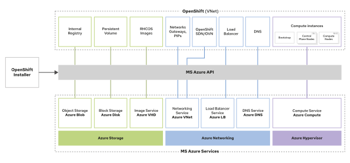
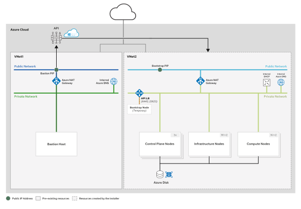
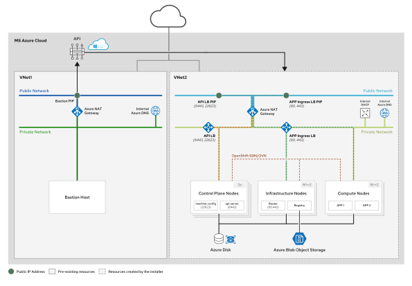

2. IPI on Cloud
IPI on a Cloud Provider¶
When using IPI on a supported IaaS cloud provider, the installer automatically provisions the following:
- OS images
- VMs or cloud instances
- Load balancers
- Storage
- Networking
Why IPI?
On supported cloud providers, Red Hat recommends using IPI, why?
- minimal intervention
- installer auto-creates required resources
- installer fully integrates the OpenShift Machine API resource with the cloud provider services.
MachineSetsenables automatic node provisiong, cluster autoscaling
UPI
Administrators can also install OpenShift using the pre-existing infrastructure method on a cloud provider. Using this approach, administrators must create manually the required cloud resources before installing OpenShift, for examples: EC2 Instances, Network Resources (VPC, Subnet etc), Elastic Block Store (EBS) volumes, IAM
Cloud Provider Services Used During an OpenShift IPI¶
Each cloud provider uses specific terminology to refer to different services used during the installation - Terminology Table of Cloud Providers:
| OpenShift resources | AWS provider | RHOSP(Red Hat OpenStack Platform) provider | Azure provider | GCP provider |
|---|---|---|---|---|
| Internal registry storage | Amazon S3 | Swift | Azure Blob | Google Cloud Object Storage |
| Persistent volume | Amazon EBS | Cinder | Azure Disk | Google Cloud Block Storage |
| RHCOS images | Amazon AMI | Glance | Azure Images (VHD) | Google Compute Engine Images |
| Networking | Amazon VPC | Neutron | Azure VNet | Google VPC |
| SDN / OVN | Amazon VPC | Neutron + Kuryr | Azure VNet | Google VPC |
| Load balancer | Amazon ELB | Static pods/Octavia LBaaS | Azure LB | Google Networking Suites |
| DNS | Amazon Route53 | External | Azure DNS | Google Cloud DNS |
| Compute instances | Amazon EC2 | Nova | Azure Compute | Google Compute Engine |
IPI on AWS¶
Prerequisites¶
Before installing OpenShift on MS Azure, administrators must perform the following actions (details check here):
- Review the general and full-stack automation prerequisites described in the Describing OpenShift Installation Prerequisites lecture.
- Create a public DNS hosted zone for the cluster in the Azure DNS service, if it does not already exist. This zone must be authoritative for the domain.
- Use an Azure Identity and Access Management (IAM) user account to run the installation. This account must have the User Access Administrator role permission.
- Ensure that the IAM Azure account fulfills the required quotas and permissions to install OpenShift.
- Create a service principal for representing the OpenShift installer in the Azure Resource Manager.
- Verify the supported Azure regions. The OpenShift installer dynamically generates a list of available Azure regions based on the MS Azure account subscription.
- Check the Azure resource name restrictions.
Sizing¶
Azure Limits That Can Impact the Ability to Install and Run a "small" OpenShift Clusters:
| Resource | Required | Default Azure limit |
|---|---|---|
| vCPU | 40 | 20 per region -> to increase it, check here |
| VNet | 1 | 1000 per region |
| Network interfaces | 6 | 65536 |
| Network security groups | 2 | 5000 |
| Network load balancers | 3 | 1000 per region |
| Public IP addresses (PIP) | 3 | - |
| Private IP addresses | 7 | - |
By default, the virtual machine (VM) sizes used on an OpenShift installation on Azure are Standard_D8s_v3 for Controlplane nodes and Standard_D4s_v3 for compute nodes. --> use bigger VM for production!
What does Intaller do in IPI?¶
- Resource Creation Stage
the OpenShift installer creates and configures the required cloud resources: (refer to the Terminology Table)

- Bootstrap Stage
the bootstrap node runs the Kubernetes API and the temporary control plane. The OpenShift installer begins to install the cluster nodes.

- Production Control Plane Stage
At this stage, the Kubernetes API and the production control plane are running on the control plane nodes. The cluster version operator (CVO), running on the production control plane, installs the operators that build the cluster and then finishes the installation.

IPI on RHOSP¶
When installing OpenShift on a Red Hat OpenStack Platform (RHOSP), Red Hat recommends using the Kuryr SDN(Software-defined networking).
Kuryr
Kuryr is a container network interface (CNI) plug-in solution. It uses the Neutron and Octavia RHOSP services to provide networking for pods and services. Advantages:
- Improves the network performance by plugging OpenShift pods into the RHOSP SDN directly.
- Provides internal connectivity between pods and RHOSP virtual instances.
- Avoids network traffic double encapsulation.